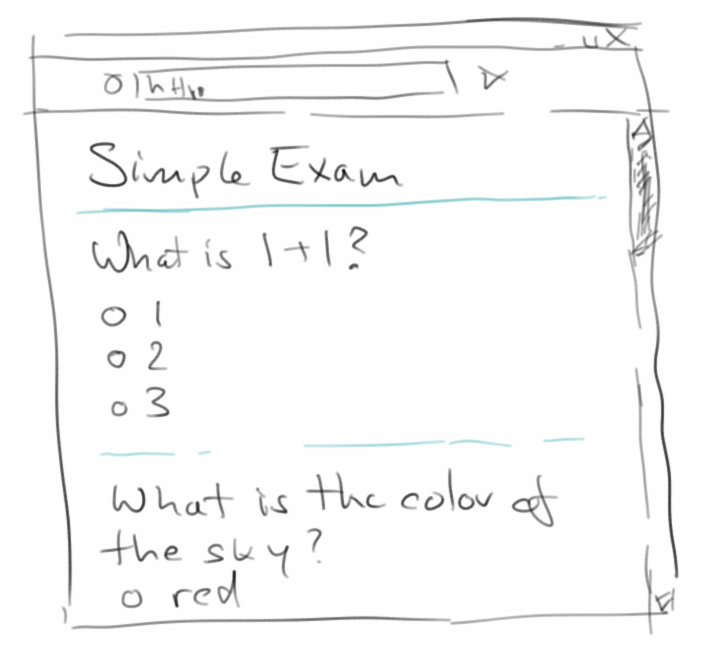
Database
Fast hinter jeder Webanwendung steckt eine Datenbank. Datenbanken sind unser Langzeit-Gedächtnis. Deswegen werden wir in diesem Kapitel Webanwendungen schreiben, die ihre Daten in Datenbanken ablegen. Wir werden allerdings relative wenig mit Datenbanken direkt zu tun haben, da wir nach einer kurzen Einführung eigentlich nur Object-Relational-Mapping verwenden werden. Dies erlaubt es uns, uns auf das Wesentliche zu konzentrieren: die Webanwendung.
.
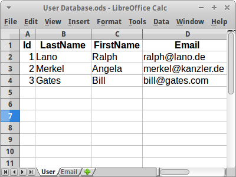Database
Obwohl viele Leute höllischen Respekt vor Datenbanken haben, sind die eigentlich gar nicht so schwer. Für uns ist eine Datenbank erst einmal ein paar Excel Tabellen. Beginnen wir mit einer Tabelle für Nutzer unserer Webanwendung, wir nennen sie mal "User". Ein User hat einen Nachnamen, einen Vornamen und eine Email Adresse. In der Tabelle werden daraus Spalten (Columns). Die einzelnen Einträge für die Leute sind dann die Reihen (Rows). Bei Datenbank Tabellen fügt man dann meist noch eine Spalte für die "Id" ein: eine Id ist einfach ein Zähler, der bei 1 anfängt, und für jeden neuen Eintrag um eins erhöht wird. Damit hat jeder Eintrag eine eigene Id, und es kann nie doppelte Ids geben. Was aber passieren könnte, dass es zwei Leute mit dem gleichen Namen gibt. Gibt's ja auch in echt.
.
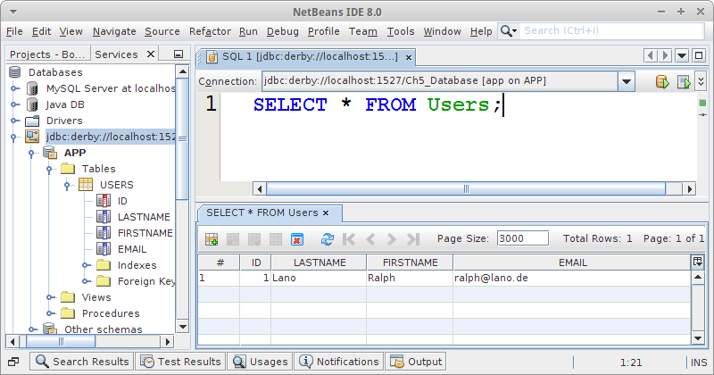JavaDB
Das schöne an Netbeans ist, dass es mit einer einfachen Datenbank kommt, der JavaDB, manchmal auch Derby genannt. JavaDB ist eine OpenSource Datenbank, in Java geschrieben, die für unsere Zwecke vollauf genügt. Sie ist ziemlich schnell, da sie alles im RAM macht, das ist aber auch ihr grösster Nachteil, man kann nicht soviel Daten in ihr speichern, also ein paar hundert Megabytes Maximum. Da wir gar nicht soviel Daten haben, ist das kein Problem.
Wenn man eine neue Datenbank anlegen will, klickt man einfach auf JavaDB mit der rechten Maustaste und sagt "Create Database". Danach verbindet man sich mit ihr in dem man einfach auf die neue Verbindung doppel-klickt. Will man dann SQL Kommandos ausführen (und wir wollen das), dann macht man wieder einen Rechtsklick und sagt "Execute Command", das öffnet dann den SQL Query Editor, so wie in dem Bild rechts.
.
SQL
Die "Structured Query Language", kurz SQL, ist die Sprache die die meisten Datenbanken sprechen. Es ist eine etwas ältere Sprache (so wie Altgriechisch, sieht man daran, dass alles groß geschrieben ist und die Befehle immer weniger als acht Buchstaben haben), aber sie funktioniert immer noch recht gut.
Als erstes ist es immer eine gute Idee evtl. existierende Tabellen zu löschen. Das geht mit
DROP TABLE Users;
ganz einfach. Sollte man natürlich nur machen, wenn da keine wichtigen Daten drin waren, die sind nämlich sonst futsch.
Danach legen wir eine neue Tabelle an. Hierfür gibt es das "CREATE TABLE" Kommando:
CREATE TABLE Users (
Id INTEGER not null,
LastName VARCHAR(255) not null,
FirstName VARCHAR(255),
Email VARCHAR(255),
PRIMARY KEY (Id)
);
Wir sagen also, dass die Tabelle "Users" heißen soll, dass es eine Spalte Id geben soll die eine Ganzzahl sein soll und die immer einen Wert haben muss (not null). Dann deklarieren wir noch die anderen Spalten. Dabei heißt "VARCHAR(255)" soviel wie ein String der Länge 255 auf Altgriechisch. Am Ende sagen wir noch, dass "Id" der Primary Key sein soll.
Nachdem wir die Tabelle angelegt haben, wollen wir auch ein paar Daten einfügen, und das geht folgendermaßen:
INSERT INTO Users (Id, LastName, FirstName, Email)
VALUES (1,'Lano','Ralph','ralph@lano.de');
Ganz wichtig sind die Apostrophen, auch Single Quotes genannt. Das sind also die geraden Striche die von oben nach unten gehen, und sich weder leicht nach links, noch leicht nach rechts lehnen.
Und schließlich wollen wir mal schauen was inzwischen in unserer Tabelle alles drin steht, und das geht mit:
SELECT * FROM Users;
Es gibt dann noch ein DELETE Kommando, aber im Prinzip war's das schon.
.
ORM
Wir könnten jetzt im 20. Jahrhundert bleiben und fleißig unsere SQL Statements tippen, und die Welt wäre auch in Ordnung. Da wir aber schon seit längerem im 21. Jahrhundert sind werden wir das nicht tun. Stattdessen werden wir ORM machen, also Object-Relational-Mapping. Das hört sich kompliziert an, ist aber eigentlich ganz einfach.
Java ist eine objekt-orientierte Sprache, und wenn wir Java schreiben, dann denken wir immer in Objekten. Alle unsere Daten sind in Form von Objekten. Bisher war es so, wenn wir unseren Rechner ausgeschaltet haben, und unsere Objekte nicht in Dateien gespeichert hatten, dann waren sie weg. Was wir jetzt machen wollen, wir wollen unsere Objekte in einer Datenbank speichern. Und genau das macht ORM für uns.
.
POJOs
POJO steht für "Plain Old Java Object", also einfach ein Java Objekt. Nehmen wir unseren User und machen daraus ein POJO:
package de.variationenzumthema.internet;
public class User {
private Long id;
private String lastName;
private String firstName;
private String email;
}
Meistens haben POJOs noch ein oder zwei Konstuktoren und natürlich Getters und Setters. Eine toString() Methode schadet auch nichts. Kann man ja alles autogenerieren lassen, deswegen kümmern wir uns der Einfachheit halber nur um die Attribute (Instanzvariablen).
Wenn wir jetzt dieses Objekt in die Datenbank speichern wollen, müssen wir es mit Annotationen versehen. Annotationen sagen dem ORM Engine (in unserem Fall Hibernate [1]) wie er denn das POJO in der Datenbank speichern soll. Nehmen wir unser User POJO:
package de.variationenzumthema.internet; @Entity @Table(name = "Users") public class User { @Id @GeneratedValue(strategy = GenerationType.IDENTITY) private Long id; @Column(nullable = false) private String lastName; private String firstName; private String email; // Hibernate needs a default constructor. public User() { super(); } }
Die erste Annotation, @Entity, sagt einfach dass die Klasse User in der Datenbank gespeichert werden soll. Die zweite Annotation, @Table, sagt wie die Datenbanktabelle heißen soll in der das POJO gespeichert wird. Normal wäre "User". Da aber "User" bei den meisten Datenbanken schon existiert, nennen wir sie "Users". "Loosers" geht auch, wäre aber problematisch wenn unsere Nutzer mal unseren Code zu sehen bekommen. Normalerweise sollte aber der Tabellenname identisch mit dem POJO Namen sein.
Danach kommen die Annotationen für die Attribute. Aus Attributen werden Spalten in der Tabelle. Wenn wir nichts sagen, dann macht Hibernate das automatisch. Wir können aber auch sagen, dass eine Spalte nicht leer sein darf mit @Column(nullable = false). Und wir sollten immer eines der Attribute als Primary Key deklarieren, das machen wir mit der @Id Annotation. Wenn wir noch wollen, dass die Datenbank die Ids automatisch vergibt, dann fügen wir noch @GeneratedValue nach der @Id hinzu.
.
hibernate.cfg.xml
Nachdem wir unsere POJOs mit Annotationen versehen haben, müssen wir unseren ORM Engine konfigurieren. Wir verwenden Hibernate. Deswegen müssen wir einmal die nötigen Libraries zum Projekt hinzufügen (macht man meist gleich am Anfang wenn man das Projekt neu anlegt), und Hibernate konfiguieren in der hibernate.cfg.xml Datei:
<hibernate-configuration>
<session-factory>
<property name="hibernate.dialect">org.hibernate.dialect.DerbyDialect</property>
<property name="hibernate.connection.driver_class">org.apache.derby.jdbc.ClientDriver</property>
<property name="hibernate.connection.url">jdbc:derby://localhost:1527/Ch5_Database</property>
<property name="hibernate.connection.username">app</property>
<property name="hibernate.connection.password">app</property>
<!-- e.g. validate | update | create | create-drop -->
<property name="hibernate.hbm2ddl.auto">create-drop</property>
<property name="show_sql">true</property>
<!-- Persistent classes -->
<mapping class="de.variationenzumthema.internet.User"/>
</session-factory>
</hibernate-configuration>
Der erste Abschnitt erklärt Hibernate wie es sich mit der Datenbank verbinden kann. Der zweite Teil sagt Hibernate, dass es bei jedem Neustart alle Tabellen in der Datenbank löschen und neu anlegen soll. So etwas sollte man natürlich nicht in einer Produktionsumgebung machen, denn sonst sind alle Daten weg. Beim Debuggen hilft es manchmal sich das SQL das Hibernate generiert anzeigen zu lassen, deswegen setzt man show_sql auf true. Und schliesslich müssen wir Hibernate noch erzählen welches POJO denn in die Datenbank geschrieben werden soll. In unserem Fall ist es das User POJO.
.
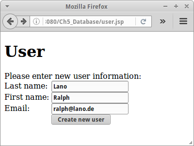User
Nach all der Vorarbeit, ist es jetzt so weit: wir wollen unser User POJO in der Datenbank speichern. Zunächst brauchen wir ein ganz einfaches HTML Formular für die Eingabe der User Daten:
<html> <body> <h1>User</h1> <p>Please enter new user information:</p> <form action="userLogic.jsp" method="GET"> Last name: <input type="text" name="lastName"/><br/> First name: <input type="text" name="firstName"/><br/> Email: <input type="text" name="email"/><br/> <input type="submit" value="Create new user"/> </form> </body> </html>
In der userLogic.jsp speichern wir diese mit Hilfe von Hibernate in der Datenbank. Das geht über die Hibernate Session:
<%
// write user to database
String lastName = request.getParameter("lastName");
String firstName = request.getParameter("firstName");
String email = request.getParameter("email");
if (lastName != null) {
Session hibSession = HibernateUtil.getSessionFactory().openSession();
hibSession.beginTransaction();
User usr = new User(lastName,firstName,email);
hibSession.merge(usr);
hibSession.getTransaction().commit();
hibSession.close();
}
%>
Wir verwenden das merge() Kommando, was wie ein Update funktioniert: also falls es den Eintrag schon gibt wird er geändert, falls nicht wird er neu angelegt. Bei allen Operationen die etwas in der Datenbank verändern, müssen wir den ganzen Code immer zwischen einem beginTransaction() und einem commit() stecken, denn es könnte ja etwas schief gehen. Falls etwas schief geht, würde man einen rollback() machen, sehen wir später noch. Am Ende immer schön brav seine Sessions zu machen mit close().
Wenn wir dann alle User auflisten wollen geht das folgendermaßen:
<%
Session hibSession = HibernateUtil.getSessionFactory().openSession();
Query q = hibSession.createQuery("from User usr order by usr.lastName desc");
Collection<User> allUsrs = q.list();
for (User usr : allUsrs) {
out.println(usr.toString()+"<br/>");
}
hibSession.close();
%>
Wir verwenden hier eine Query um die Datenbankabfrage zu erledigen. Die Querysprache ist HQL (Hbernate Query Language) die vom Syntax her sehr ähnlich zu SQL ist, später mehr dazu.
.
HibernateUtil
HibernateUtil ist eine Klasse, die man sich durch Netbeans ganz einfach autogenerieren lassen kann, aber man kann sie auch selbst von Hand anlegen:
package de.variationenzumthema.internet;
public class HibernateUtil {
private static final SessionFactory sessionFactory;
static {
try {
sessionFactory = new AnnotationConfiguration().configure().buildSessionFactory();
} catch (Throwable ex) {
throw new ExceptionInInitializerError(ex);
}
}
public static SessionFactory getSessionFactory() {
return sessionFactory;
}
}
Die HibernateUtil ist ein Singleton Pattern, und gibt uns Zugriff auf die Hibernate SessionFactory. Die SessionFactory benötigen wir um neue Hibernate Sessions zur Datenbank aufzumachen. Haben wir ja oben schon verwendet.
.
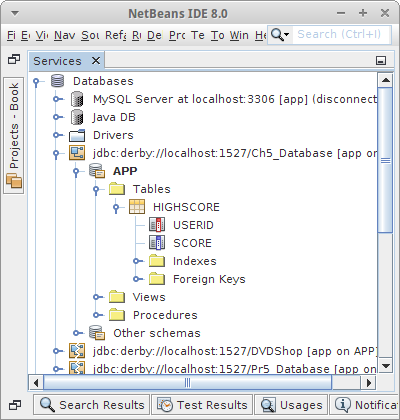HighScore
Beginnen wir mit ein paar Beispielen um uns mit ORM anzufreunden. Viele Spiele im Internet haben eine HighScore Liste. Die muss natürlich irgendwo gespeichert werden, und wir werden eine kleine Anwendung dafür schreiben. Zu einem HighScore gehört eine UserId, z.B. ein Alias oder eine Email Adresse, und ein Score. Damit lässt sich auch schon unser HighScore definieren:
@Entity
@Table(name = "HighScore")
public class HighScore {
@Id
private String userId;
@Column(nullable = false)
private int score;
... constructors, getters, setters, toString
}
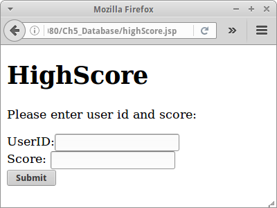Dieses Mal haben wir bei unserem Primary Key die @GeneratedValue Annotation weggelassen, was Sinn macht, da wir ja die UserId wählen wollen und nicht die Datenbank das machen soll. Es bedeutet aber auch, dass die UserId eindeutig sein muss, es kann also keine zwei Personen mit gleicher UserId geben. Was wir nicht vergessen dürfen, wir müssen noch einen Eintrag für unser neues POJO in der hibernate.cfg.xml Datei machen.
Zum Testen der Anwendung schreiben wir wieder ein Formular, wie rechts zu sehen. In diesem Fall wollen wir den GET Request verwenden, da wir später ja evtl von unserem Spiel aus über einen ganz einfachen Aufruf wie etwa
http://localhost:8080/Ch5_Database/highScoreLogic.jsp?userId=ralphlano&score=42
einen neuen Eintrag in die HighScore Liste generieren wollen (kann man mit der Java URL Klasse ganz einfach machen).
Das Schreiben der Daten in die Datenbank erfolgt wieder vollkommen analog wie in unserem User Beispiel. Wir tun das in der highScoreLogic.jsp Datei:
<%
// write score to database
String userId = request.getParameter("userId");
String score = request.getParameter("score");
if ((userId != null) && (score != null)) {
Session hibSession = HibernateUtil.getSessionFactory().openSession();
hibSession.beginTransaction();
HighScore hs = new HighScore(userId, Integer.parseInt(score));
hibSession.merge(hs);
hibSession.getTransaction().commit();
hibSession.close();
}
// show high scores:
%>
<!DOCTYPE html>
<html>
<body>
<h1>HighScore</h1>
<ol>
<%
Session hibSession = HibernateUtil.getSessionFactory().openSession();
Query q = hibSession.createQuery("from HighScore hs order by hs.score desc");
Collection<HighScore> highScrs = q.list();
for (HighScore hs : highScrs) {
out.println(hs.toString()+"<br/>");
}
hibSession.close();
%>
</ol>
</body>
</html>
.
DAO
Wenn wir die beiden Dateien userLogic.jsp und highScoreLogic.jsp vergleichen sehen wir, dass diese fast identisch sind. Immer wenn etwas fast identisch ist, dann deutet das auf eine mögliche Vereinfachung hin. Im Falle von Datenbanken (und auch Hibernate) läuft das fast immer auf die sogenannten DAOs hinaus, die Data Access Objects.
Ein DAO sollte die standard Datenbank Operationen, Create, Read, Update und Delete, auch CRUD genannt, beherrschen. Für unsere HighScore Anwendung würde die folgende HighScoreDao Klasse genau das machen (wir haben der Lesbarkeit halber das Exception Handling weggelassen):
package de.variationenzumthema.internet;
public class HighScoreDao {
private Session hibSession = null;
public HighScoreDao() {
this.hibSession = HibernateUtil.getSessionFactory().openSession();
}
public HighScore merge(HighScore entity) {
hibSession.beginTransaction();
HighScore e = (HighScore) hibSession.merge(entity);
hibSession.getTransaction().commit();
return e;
}
public void delete(HighScore entity) {
hibSession.beginTransaction();
hibSession.delete(entity);
hibSession.getTransaction().commit();
}
public HighScore findById(String id) {
return (HighScore) hibSession.get("HighScore", id);
}
@SuppressWarnings("unchecked")
public List<HighScore> findAll() {
return hibSession.createQuery("Select e From HighScore e").list();
}
}
Die Methode merge() ist sowohl für Create als auch für Update zuständig, die Methode delete() kümmert sich um das Delete, und mit findById() und findAll() wird das Read abgedeckt.
Unsere highScoreLogic.jsp Datei wird dann um einiges einfacher:
<% // write score to database HighScoreDao dao = new HighScoreDao(); String userId = request.getParameter("userId"); String score = request.getParameter("score"); if ((userId != null) && (score != null)) { HighScore hs = new HighScore(userId, Integer.parseInt(score)); dao.merge(hs); } // show high scores: %> <!DOCTYPE html> <html> <body> <h1>HighScore</h1> <ol> <% Collection<HighScore> highScrs = dao.findAll(); for (HighScore hs : highScrs) { out.println(hs.toString()+"<br/>"); } %> </ol> </body> </html>
Unser Datenbank Code reduziert sich auf drei Zeilen.
.
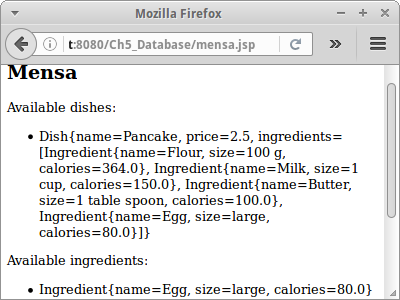Mensa
Als nächstes wollen wir uns Datenbanken widmen mit mehr als nur einer Tabelle. Wir nehmen dazu unser Mensa Beispiel aus dem ersten Semester:
"Die Mensa hat Gerichte und Zutaten. Ein Gericht hat einen Namen, einen Preis und eine Liste von Zutaten. Eine Zutat hat einen Namen, einen Preis und Kalorien."
.
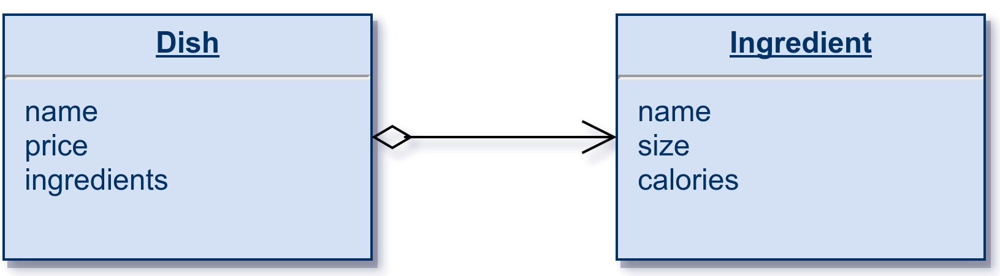Mensa POJOs
Wir beginnen mit unseren POJOs, in diesem Fall Dish:
@Entity
@Table(name = "Dish")
public class Dish {
@Id
private String name;
@Column(nullable = false)
private double price;
@OneToMany
private Set<Ingredient> ingredients;
... constructors, getters, setters, toString
}
und Ingredient:
@Entity
@Table(name = "Ingredient")
public class Ingredient {
@Id
private String name;
private String size;
private double calories;
... constructors, getters, setters, toString
}
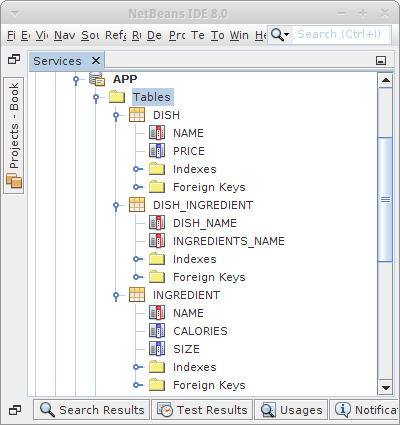Das Einzige was hier neu ist, ist die Verknüpfung zwischen den beiden POJOs: eine OneToMany Beziehung. Soll heißen, ein Dish kann mehrere Ingredients haben. Wir können als Datenstruktur ein Set oder eine Liste verwenden. Wenn uns die Reihenfolge der Ingredients egal ist, nehmen wir ein Set, ansonsten eine Liste.
Interessant ist zu sehen was hier in der Datenbank passiert: Hibernate generiert jeweils eine Tabelle für die Dish und Ingredient POJOs. Zusätzlich wird aber noch eine Tabelle DISH_INGREDIENT angelegt, eine sogenannte Intersection Table, mit der die OneToMany Beziehung in der Datenbank abgebildet wird.
.
Mensa DAOs
Nachdem wir unsere POJOs definiert haben, und auch zur hibernate.cfg.xml Datei hinzugefügt haben, definieren wir die DAOs. In diesem Fall zwei, weil wir ja zwei POJOs haben. Wenn wir uns die beiden POJOs ansehen, dann sehen wir das die faktisch identisch sind. Sowas ruft natürlich förmlich nach Vererbung, und wenn man ein klein bischen was von Generics versteht, denn sehen unsere beiden DAOs sehr einfach aus:
public class MensaDishDao extends GenericDao<String, Dish> {
public MensaDishDao() {
super();
}
}
und
public class MensaIngredientDao extends GenericDao<String, Ingredient> {
public MensaIngredientDao() {
super();
}
}
.
Generics
Wir haben bisher Generics eigentlich nur indirekt gesehen, wenn wir Listen, Maps oder Sets verwendet haben. Hier bietet sich jetzt die Gelegenheit Generics einmal selbst anzuwenden:
public class GenericDao<K extends Serializable, E> { private Class<E> entityClass; private Session hibSession = null; public GenericDao() { this.hibSession = HibernateUtil.getSessionFactory().openSession(); // some reflection magic: ParameterizedType genericSuperclass = (ParameterizedType) getClass().getGenericSuperclass(); this.entityClass = (Class<E>) genericSuperclass.getActualTypeArguments()[1]; } public void delete(E entity) { hibSession.beginTransaction(); hibSession.delete(entity); hibSession.getTransaction().commit(); } public E merge(E entity) { hibSession.beginTransaction(); E e = (E) hibSession.merge(entity); hibSession.getTransaction().commit(); return e; } public E findById(K id) { return (E) hibSession.get(entityClass, id); } @SuppressWarnings("unchecked") public List<E> findAll() { return hibSession.createQuery("Select e From " + entityClass.getCanonicalName() + " e").list(); } protected Session getHibernateSession() { return hibSession; } }
Obwohl man anfangs vielleicht etwas überwältigt ist, wenn man sich den Code lange genug ansieht und ihn mit der HighScoreDao vergleicht, beginnt man das Licht am Ende des Tunnels zu erblicken.
.
Mensa Test
Etwas später werden wir die Mensa Web Anwendung komplett implementieren. Aber nur zum Testen wollen wir eine kleine JSP Seite schreiben, mensa.jsp, die ein paar Ingredients und Dishes anlegt, und dann alle auflistet, damit wir sehen, dass auch alles funktioniert.
Das Anlegen von Test Objekten macht man am besten in der DAO. Wir fügen zu jeder der beiden DAOs eine Methode initDatabase() hinzu. Einmal bei den Ingredients:
public class MensaIngredientDao extends GenericDao<String, Ingredient> {
public MensaIngredientDao() {
super();
}
public void initDatabase() {
save( new Ingredient("Egg", "large", 80) );
save( new Ingredient("Butter", "1 table spoon", 100) );
save( new Ingredient("Milk", "1 cup", 150) );
save( new Ingredient("Flour", "100 g", 364) );
}
}
und dann bei den Dishes:
public class MensaDishDao extends GenericDao<String, Dish> {
public MensaDishDao() {
super();
}
public void initDatabase(MensaIngredientDao daoIng) {
Set<Ingredient> ingrds = new HashSet<Ingredient>();
ingrds.add(daoIng.findById("Egg"));
ingrds.add(daoIng.findById("Butter"));
ingrds.add(daoIng.findById("Milk"));
ingrds.add(daoIng.findById("Flour"));
save(new Dish("Pancake", 2.50, ingrds));
}
}
Mit diesen Modifikationen wird mensa.jsp Seite relativ einfach:
<%!
public void jspInit() {
ServletContext application = getServletConfig().getServletContext();
MensaIngredientDao daoIng = new MensaIngredientDao();
daoIng.initDatabase();
application.setAttribute("Mensa.IngredientDao", daoIng);
MensaDishDao daoDish = new MensaDishDao();
daoDish.initDatabase(daoIng);
application.setAttribute("Mensa.DishDao", daoDish);
}
%>
In der jspInit() Methode kreiieren wir je ein MensaIngredientDao und ein MensaDishDao, initialisieren jede Tabelle mit Daten, und fügen die DAO-Objekte zum application Objekt hinzu. Das hat den Vorteil, dass wir später nicht immer wieder den Konstruktor neu aufrufen müssen, bedeutet aber auch ein gewisses Bottleneck, denn es existiert jeweils nur ein Objekt von jeder DAO.
Kommen wir zum zweiten Teil der mensa.jsp Seite:
<html>
<body>
<h2>Mensa</h2>
<p>Available dishes:</p>
<ul>
<%
MensaDishDao daoDish = (MensaDishDao)application.getAttribute("Mensa.DishDao");
List<Dish> dishs = daoDish.findAll();
for (Dish di : dishs) {
out.println("<li>"+di+"</li>");
}
%>
</ul>
<p>Available ingredients:</p>
<ul>
<%
MensaIngredientDao daoIng = (MensaIngredientDao)application.getAttribute("Mensa.IngredientDao");
List<Ingredient> ings = daoIng.findAll();
for (Ingredient ing : ings) {
out.println("<li>"+ing+"</li>");
}
%>
</ul>
</body>
</html>
Wir holen uns das jeweilige DAO Objekt, und listen einfach alle Dishes und Ingredients auf.
.
OneToOne, ManyToOne, OneToMany und ManyToMany
Was ORM ein klein wenig kompliziert macht sind die Beziehungen zwischen POJOs. Im Mensa Beispiel haben wir unsere erste OneToMany Beziehung gesehen. Es gibt aber noch andere Beziehungen. Um ein bischen ein Gefühl für die verschiedenen X-To-Y Beziehungen zwischen Tabellen zu bekommen, betrachten wir das Beispiel mit Usern und ihren Emails. Nehmen wir an, es gibt eine Klasse User und eine Klasse Email:
public class User {
private String lastName;
private Email email;
}
|
public class Email {
private String emailAddress;
}
|
Je nach Anwendung kann es die folgenden vier Szenarien geben:
- OneToOne
- ManyToOne
- OneToMany
- ManyToMany
Ausserdem müssen wir noch zwischen uni-direktional und bi-direktional unterscheiden: im ersten Fall, kennt der User seine Email, die Email weiß aber nicht zu welchem User sie gehört. Im bi-direktional Fall, kennt der User seine Email, und die Email weiß zu welchem User sie gehört. Der uni-direktionale Fall ist immer einfacher und auch performanter. Nur wenn absolut nötig sollte man den bi-direktionalen Fall verwenden. Wir werden fast ausschließlich uni-direktional arbeiten.
.
OneToOne
Die einfachste Beziehung ist die OneToOne Beziehung: Ein User hat eine Email:
public class User {
@Id
private String lastName;
@OneToOne
@JoinColumn(unique=true)
private Email email;
}
|
public class Email {
@Id
private String emailAddress;
}
|
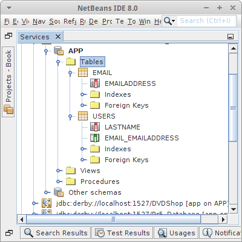 |
In dieser Beziehung hat ein User eine Email. Wenn wir allerdings möchten, dass eine Email nicht zu zwei Usern gehören darf, müssen wir noch den Uniqueness Constraint angeben. Denn ohne ist es möglich, dass die gleiche Email zu zwei Usern gehört.
.
ManyToOne
Die nächst einfachere Beziehung ist die ManyToOne Beziehung: Auch, ein User hat eine Email:
public class User {
@Id
private String lastName;
@ManyToOne
private Email email;
}
|
public class Email {
@Id
private String emailAddress;
}
|
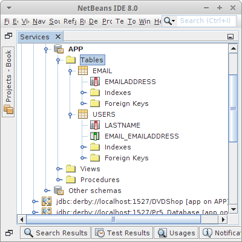 |
Wenn wir uns das Datenbank Schema ansehen, bemerken wir, dass es identisch zur OneToOne Beziehung ist. Wenigstens im uni-direktional Fall. Deswegen wird die ManyToOne Beziehung eigentlich nie alleine verwendet, sondern immer zusammen mit einer OneToMany Beziehung auf der anderen Seite.
.
OneToMany
Das ist eigentlich die Beziehung die am häufigsten vorkommt: Ein User hat mehrere Emails:
public class User {
@Id
private String lastName;
@OneToMany
private Set<Email> email;
}
|
public class Email {
@Id
private String emailAddress;
}
|
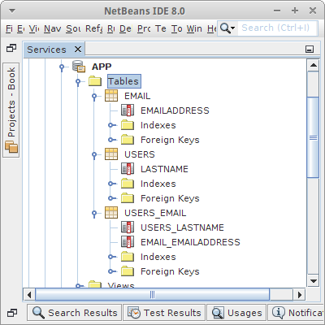 |
In dieser Beziehung kann ein User mehrere Emails haben. Interessant ist allerdings, dass eine Email nicht zu zwei Usern gehören kann.
.
ManyToMany
Schliesslich kommen wir zur komplexesten Beziehung: Ein User hat mehrere Emails und eine Email kann zu mehreren Usern gehören:
public class User {
@Id
private String lastName;
@ManyToMany
private Set<Email> email;
}
|
public class Email {
@Id
private String emailAddress;
}
|
 |
In dieser Beziehung kann ein User mehrere Emails haben. Und eine Email kann auch zu mehreren Usern gehören.
.
Review
Was haben wir in diesem Kapitel gelernt? Wir haben
- eine einfache Datenbank kennengelernt
- die Grundkommandos von SQL gesehen und das Akronym CRUD
- unsere ersten Schritte mit ORM unternommen
- und die Unterschiede zwischen den verschiedenen X-To-Y Beziehungen
.
Projekte
Jetzt wird es Ernst: wir können in Prinzip fast jede existierende Webanwendung nachbauen. Natürlich macht es Sinn sich langsam vorzuarbeiten. Machen wir hier.
.
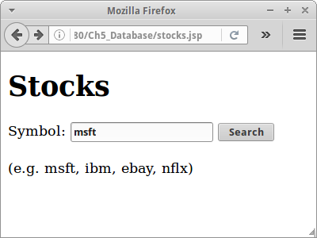Stocks
Im ersten Semester haben wir eine kleine Anwendung geschrieben um Aktienkursen anzuzeigen. Wir wollen das Beispiel jetzt webifizieren. Wichtig ist uns dabei, dass die Daten nicht aus der Datei kommen, sondern aus der Datenbank.
Für uns besteht ein Aktienkurs aus dem Aktienkürzel, oder Symbol, und den Kursen, einfach einer Liste von Double. Das Ganze fassen wir in dem POJO StockSymbol zusammen:
@Entity
@Table(name = "StockSymbol")
public class StockSymbol {
@Id
private String symbol;
@ElementCollection
@Column(name = "prices", nullable = false)
private List<Double> prices;
... constructors, getters, setters, toString
}
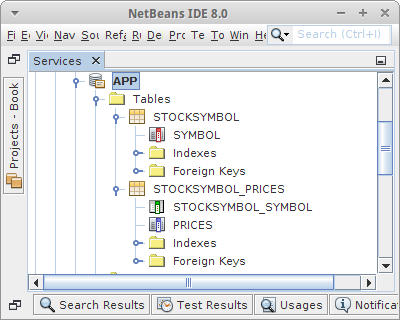Was hier neu ist ist das Attribut @ElementCollection: es ist effektiv wie eine OneToMany Beziehung für primitive Datentypen. Wie das in der Datenbank abgebildet wird sehen wir rechts. Es gibt also eine Tabelle für die Symbole und eine für die Aktienkurse.
Nachdem unser POJO steht, sehen wir uns die DAO an. Wir machen nicht viel mit der Datenbank: wir initialisieren sie einmal, danach greifen wir nur lesend darauf zu, deswegen brauchen wir eigentlich nicht die GenericDao zu bemühen.
public class StockDao {
private Session hibSession = null;
public StockDao() {
this.hibSession = HibernateUtil.getSessionFactory().openSession();
}
public StockSymbol getStockPrice(String symbol) {
return (StockSymbol) hibSession.get(StockSymbol.class, symbol);
}
public List<String> initStockPriceTable(String path) {
List<String> dates = null;
try {
hibSession.beginTransaction();
BufferedReader br = new BufferedReader(new FileReader(path));
// first line contains dates:
String line = br.readLine();
dates = readDates(line);
// other lines contain data:
while (true) {
line = br.readLine();
if (line == null) {
break;
}
StockSymbol entry = new StockSymbol(line);
hibSession.merge(entry);
}
br.close();
hibSession.getTransaction().commit();
} catch (Exception e) {
e.printStackTrace();
}
return dates;
}
private List<String> readDates(String line) {
List<String> dates = new ArrayList<String>();
String[] datesArray = line.split(",");
for (int i = 1; i < datesArray.length; i++) {
dates.add(datesArray[i]);
}
return dates;
}
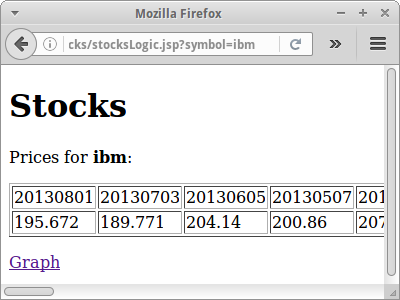In der Methode initStockPriceTable() lesen wir die Aktienkurs aus der Datei und speichern sie in der Datenbank. Interessant ist dabei, dass wir nicht jedesmal einen Commit machen, sondern erst nachdem wir alle Daten gespeichert haben. Das ist ungefähr dreimal so schnell. Trotzdem dauert das Ganze ca eine halbe Minute. Nachdem die Daten aber in der Datenbank sind, ist die Anwendung sehr schnell.
In der stocksLogic.jsp Seite initialisieren wir alles in der jspInit() Methode. Wir kreiieren das Dao Objekt, rufen die initStockPriceTable() Methode auf, und fügen es dem application Objekt hinzu, damit wir später ganz einfach darauf zugreifen können. Über den Request-Parameter erhalten wir das gewünschte Symbol, für das wir die Daten aus der Datenbank abfragen, und schließlich in einer HTML Tabelle anzeigen.
<%!
public void jspInit() {
String path = getServletContext().getRealPath("/") + "stocks/SP500_HistoricalStockDataMonthly.csv";
ServletContext application = getServletConfig().getServletContext();
// init database with data from file:
StockDao dao = new StockDao();
List<String> dates = dao.initStockPriceTable(path);
application.setAttribute("Stocks.dao", dao);
application.setAttribute("Stocks.dates", dates);
}
%>
<%
// query database for symbol
String symbol = request.getParameter("symbol");
StockDao dao = (StockDao) application.getAttribute("Stocks.dao");
List<String> dates = (List<String>) application.getAttribute("Stocks.dates");
StockSymbol sp = dao.getStockPrice(symbol);
// show stock prices:
%>
<!DOCTYPE html>
<html>
<body>
<h1>Stocks</h1>
<p>Prices for <strong><%= sp.getSymbol()%></strong>:</p>
<table border="1">
<tr>
<%
for (int i = 0; i < dates.size(); i++) {
out.println("<td>"+dates.get(i)+"</td>");
}
%>
</tr>
<tr>
<%
List<Double> prices = sp.getPrices();
for (int i = 0; i < prices.size(); i++) {
out.println("<td>"+prices.get(i)+"</td>");
}
%>
</tr>
</table>
<p><a href="stocksGraphics.jsp?symbol=<%= symbol %>">Graph</a></p>
</body>
</html>
.
Challenge
Eigentlich sind wir mit unserer Hauptaufgabe, Aktienkurse in eine Datenbank zu schreiben und dann daraus zu lesen fertig. Nur die Darstellung als HTML Tabelle ist nicht besonders sexy. Mit ein klein wenig JavaScript und der JavaScript Library D3JS [2] ist es aber ein Leichtes die Aktienkurse auch grafisch darzustellen. Wir müssen lediglich die Kursdaten in eine Form bringen, die die D3JS Bibliothek versteht, in diesem Fall "TabSeperatedValues" auch TSV genannt. Das macht die Datei stocksTSV.jsp:
<%
// query database for symbol
String symbol = request.getParameter("symbol");
StockDao dao = (StockDao) application.getAttribute("Stocks.dao");
List<String> dates = (List<String>) application.getAttribute("Stocks.dates");
StockSymbol sp = dao.getStockPrice(symbol);
// from 20121011 to 11-Oct-12
DateFormat formater1 = new SimpleDateFormat("yyyyMMdd");
DateFormat formater2 = new SimpleDateFormat("dd-MMM-yy");
// show stock prices in TSV form:
out.println("date close");
List<Double> prices = sp.getPrices();
for (int i = 0; i < dates.size(); i++) {
Date dte = (Date)formater1.parse(dates.get(i));
out.println(formater2.format(dte) +" "+prices.get(i));
}
%>
Diese Daten können dann mit Hilfe der JavaScript Datei stocksGraphics.jsp grafisch dargestellt werden. Der JavaScript stammt von Mike Bostock’s Line Chart Beispiel [3].
SI: notice you can download the stock data directly: SP500_HistoricalStockDataMonthly.csv, you may not want that!
.
 Wiki
Wiki
Wir sind jetzt soweit unser eigenes kleines Wiki zu schreiben. Die Anforderungen dazu und die UI haben wir ja bereits im ersten Kapitel beschrieben und umgesetzt. Was noch fehlt ist der Wiki-Markup. Wir lassen uns von Wikipedia's Markup inspirieren, und beschränken uns aber auf folgenden:
- '=' für Überschriften (evtl auch '==' und '==='),
- '----' für eine horizontale Trennlinie,
- eine leere Zeile für eine Leerzeile,
- '*' für eine Aufzählungsliste,
- und natürlich [[...]] für Links.
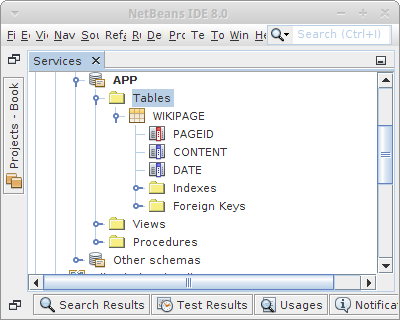POJOs
Kümmern wir uns als nächstes um das Datenmodel, die POJOs. In diesem Fall genügt ein POJO:
public class WikiPage {
@Id
private String pageId;
@Column(length = 32000, nullable = false)
private String content;
@Column(nullable = false)
private Date date;
... constructors, getters, setters, toString
}
Nichts besonders kompliziertes. Auch die DAO ist eigentlich trivial:
public class WikiDao extends GenericDao<String, WikiPage> {
public WikiDao() {
super();
}
public List<WikiPage> search(String searchTerm) {
List<WikiPage> pageList = null;
searchTerm = Utility.escapeSql(searchTerm);
Query q = getHibernateSession().createQuery(
"from WikiPage as pg where lower(pg.content) "
+ "like lower('%"+searchTerm+"%') "
+ "order by pg.pageId asc"
);
pageList = (List<WikiPage>) q.list();
return pageList;
}
/**
* we want pages to be sorted, hence override default behavior
*/
public List<WikiPage> findAll() {
return getHibernateSession().createQuery("from WikiPage as pg order by pg.pageId asc").list();
}
public void initDatabase() {
String homePage
= "= Wiki =\n"
+ "Welcome to 'Wiki'.\n"
+ "\n"
+ "Help can be found under [[help]].\n"
+ "----\n";
merge(new WikiPage("home", homePage));
String helpPage
= "= Help =\n"
+ "How to use this simple Wiki. The following markup exists:\n"
+ "* '=' for heading (=, ==, === exist)\n"
+ "* '----' for horizontal line\n"
+ "* empty line for new line\n"
+ "* '*' for bulleted list\n"
+ "* \\[\\[...\\]\\] for links\n"
+ "That's it.";
merge(new WikiPage("help", helpPage));
}
}
In der initDatabase() Methode initialisieren wir wie üblich die Datenbank, in diesem Fall mit zwei Wikiseiten.
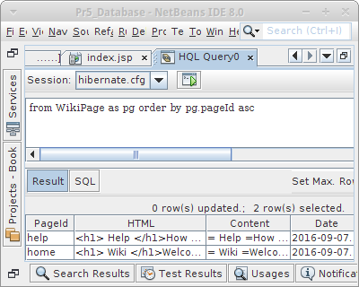HQL
Interessanter sind allerdings die findAll() und die search() Methoden. In der findAll() Methode überschreiben wir das normale Verhalten der Elternklasse, wir wollen nämlich dass die Seiten in alphabetischer Reihenfolge gelistet werden. Das erreichen wir mit dem "order by" Argument, und "asc" steht für ascending, also aufsteigend.
Noch interessanter ist die search() Methode: die Sprache die wir hier verwenden ist die Hibernate Query Language (HQL), die vom Syntax her stark an SQL erinnert:
"from WikiPage as pg where lower(pg.content) "
+ "like lower('%"+searchTerm+"%') "
+ "order by pg.pageId asc"
Eigentlich ist die Query selbsterklärend.
In Netbeans gibt es einen HQL Editor, der es einem erlaubt HQL Queries zu testen. Man erreicht ihn, in dem auf die hibernate.cfg.xml Datei mit der rechten Maustaste klickt und dann "Run HQL Query" auswählt. Der HQL Editor hat allerdings zwei kleine Quirks: zum einen müssen alle POJOs einen Default Konstruktor haben. Und zum anderen, müssen wir bevor wir den HQL Editor aufrufen, in der hibernate.cfg.xml Datei das "create-drop" durch "validate" ersetzen. Aus irgendeinem Grund, werden beim Start des HQL Editor anscheinend alle Tabellen erst einmal gedropped. Aber ansonsten funktioniert der HQL Editor "like a charm".
Prepared Statements
Im vorletzten Kapitel haben wir ganz kurz das Wort "SQL Injection" verwendet als wir über Cross-Site Scripting (XSS) und escapeXML() gesprochen haben. Was ist "SQL Injection"? Nehmen wir an wir fragen einen Nutzer nach userName und password, und würden dann daraus folgendes SQL konstruieren:
String sql = "SELECT id FROM users WHERE username='"+userName+"' AND password='"+password+"'";
Wenn der Nutzer so etwas wie "ralph" und "123456" eingibt, dann funktioniert das auch super. Wenn aber ein Schlaumeier für password das folgende eingibt:
222222' OR '1' = '1
dann passiert etwas interessantes: obwohl das Passwort falsch ist, wird er trotzdem eingeloggt. Das hat damit zu tun, dass die Datenbank folgendes sieht:
false AND false OR true
und das ergibt immer true. Und das ist "SQL Injection". Es ist überraschend wieviele echte Webseiten sich mit diesem Trick überrumpeln lassen.
Wir wollen das natürlich nicht, und deswegen verwenden wir zum einen immer die escapeSql() Methode, aber zum anderen sollten wir auch Prepared Statements verwenden. In Hibernate Speek würde das so aussehen:
createQuery("from User where userName=:userName").setParameter("userName", userName).getSingleResult();
Im Beispiel für die search() Methode gerade haben wir das fälschlicherweise nicht so gemacht, aber jetzt können wir es ja richtig machen.
Regular Expressions
Kommen wir zum letzten interessanten Thema in diesem Projekt: reguläre Ausdrücke. Die Frage ist nämlich wie macht man aus dem Wiki Markup
= Wiki = Welcome to 'Wiki'. Help can be found under [[help]]. ----
das folgende HTML?
<h1> Wiki </h1> Welcome to 'Wiki'. <br/> Help can be found under <a href='index.jsp?page=help'>help</a>. <hr/>
Wenn wir uns an unsere reguläre Ausdrücke aus dem zweiten Semester erinnern, dann ist das fast trivial. Was unser Leben einfach macht ist dass die Methode replaceAll() der Klasse String reguläre Ausdrücke verwendet.
private String parseLine(String line) {
String regex;
// ' ' <br/>
if (line.length() == 0) {
line = "<br/>\n";
return line;
}
// ---- <hr/>
if (line.equals("----")) {
line = "<hr/>\n";
return line;
}
// escape html tags: '<' and '>'
line = line.replaceAll("<", "<");
line = line.replaceAll(">", ">");
// * <ul><li>
if (line.startsWith("*")) {
line = "<ul><li>" + line.substring(1) + "</li></ul>\n";
}
// = <h1>
if (line.startsWith("=")) {
regex = "(=(.+?)=)";
line = line.replaceAll(regex, "<h1>$2</h1>\n");
// == <h2>
regex = "(==(.+?)==)";
line = line.replaceAll(regex, "<h2>$2</h2>\n");
// === <h3>
regex = "(===(.+?)===)";
line = line.replaceAll(regex, "<h3>$2</h3>\n");
}
// [[]] <a>
regex = "(\\[\\[(.+?)\\]\\]*)";
line = line.replaceAll(regex, "<a href='index.jsp?page=$2'>$2</a>");
// \[ -> [
line = line.replaceAll("\\\\\\[", "[");
line = line.replaceAll("\\\\\\]", "]");
return line;
}
Langsam werden wir warm mit den regulären Ausdrücken, oder? I love them.
Challenge
Wenn man noch etwas Zeit und Lust hat, kann man das Wiki ein bischen erweitern:
- sich überlegen wie man mit multi-user Edits umgeht, oder alternativ
- eine Versionierung einführt
- ein Login hinzufügt, damit nur eingeloggte Nutzer Änderungen vornehmen dürfen
- ein Image Upload ermöglicht, natürlich mit dazugehörigem Markup.
SI: always use escapeSql() and escapeXml() when you dont trust user input, which you should never
.
 Mensa
Mensa
Kommen wir noch einmal zurück zu unserem Mensa Beispiel. Im ersten Kapitel haben wir ja ausführlich die Requirements gelistet und auch die UI umgesetzt. Am Anfang dieses Kapitels haben wir das Problem aus der Datenbank/POJO Sicht beleuchtet. Allerdings ist uns dabei ein kleiner Fehler unterlaufen. Denn die Beziehung zwischen Dish und Ingredient ist keine OneToMany Beziehung, sondern eine ManyToMany Beziehung. Warum? Weil die Zutat "Milch" durchaus in mehreren Gerichten vorkommen kann. Also, ein Dish hat mehrere Ingredients und ein Ingredient kann zu mehreren Dishes gehören, deswegen müssen wir hier eine ManyToMany Beziehung wählen. Wir müssen noch klären ob die Beziehung uni-direktional oder bi-direktional sein soll. In unseren Anforderungen steht nichts, dass wir auflisten sollen in welchen Dishes ein bestimmtes Ingredient vorkommt, deswegen ist die Beziehung uni-direktional. Also müssen wir im POJO Dish lediglich OneToMany durch ManyToMany ersetzen.
Nach diese kleine Änderung kümmern wir uns um die JSP Seiten. Die UI steht ja schon, wir müssen lediglich die Datenbank Logik hinzufügen. Beginnen wir mit der listIngredients.jsp Seite:
<html>
<body>
<%@include file="mensaNavigation.jsp" %>
<h2>List all Ingredients</h2>
<ul>
<%
IngredientDao daoIng = (IngredientDao)application.getAttribute("Mensa.IngredientDao");
List<Ingredient> ings = daoIng.findAll();
for (Ingredient ing : ings) {
out.println("<li>"+ing+"</li>");
}
%>
</ul>
</body>
</html>
Die Liste der Ingredients ist jetzt nicht mehr statisch, sondern kommt aus der Datenbank.
Die addIngredient.jsp Seite wird ein klein wenig modifiziert, damit die Logik richtig funktioniert:
<html> <body> <%@include file="mensaNavigation.jsp" %> <h2>Add New Ingredient</h2> <form action="mensaLogic.jsp" method="GET"> Name: <input type="text" name="name"/><br/> Size: <input type="text" name="size"/><br/> Calories: <input type="text" name="calories"/><br/> <input type="hidden" name="addIngredient"/> <input type="submit" value="Add Ingredient"/> </form> </body> </html>
Denn wir wollen die Logik zentral in der mensaLogic.jsp Seite zusammenführen:
<%
// add new ingredient
if ( request.getParameter("addIngredient") != null ) {
String name = request.getParameter("name");
String size = request.getParameter("size");
double calories = Double.parseDouble(request.getParameter("calories"));
if (name != null) {
Ingredient ingr = new Ingredient(name,size,calories);
IngredientDao daoIng = (IngredientDao)application.getAttribute("Mensa.IngredientDao");
daoIng.merge(ingr);
}
response.sendRedirect("listIngredients.jsp");
return;
}
// delete ingredient
...
// add new dish
...
// delete dish
...
response.sendRedirect("mensa.jsp");
%>
Analog müssen wir jetzt nur noch die Seiten
- listDishes.jsp
- addDish.jsp
- deleteDish.jsp
- deleteIngredient.jsp
modifizieren und mit Leben füllen. Ist aber gar nicht so schwer.
.
 Login
Login
Die wohl am häufigsten benötigte Anwendung ist die Login Anwendung. Im ersten Kapitel haben wir unsere Anforderungen aufgestellt und die UI Screen bereits umgesetzt. Was noch fehlt ist die Logik. Die fassen wir ein einer loginLogic.jsp Seite zusammen.
Die Loginseite, login.jsp, haben wir ja schon angelegt. Die Logindaten werden in der loginLogic.jsp Seite überprüft. Anstelle eines response.sendRedirect() verwenden wir das erste Mal den RequestDispatcher, der es uns erlaubt Daten mitzuschicken. Das ist nicht möglich mit sendRedirect().
<%
// user login
if (request.getParameter("login") != null) {
String emailId = request.getParameter("emailId");
String passwd = request.getParameter("password");
if ((emailId != null) && (passwd != null)) {
// try to create a user object
UserDao usrDao = (UserDao)application.getAttribute("Login.UserDao");
User usr = usrDao.loginUser(emailId,passwd);
if ( usr != null ) {
session.setAttribute("Login.User",usr);
response.sendRedirect("protected.jsp");
return;
} else {
request.setAttribute("error", "Wrong username and/or password.");
request.getRequestDispatcher("login.jsp").forward(request, response);
return;
}
}
request.setAttribute("error", "Please enter username and password.");
request.getRequestDispatcher("login.jsp").forward(request, response);
return;
}
%>
Als nächstes kümmern wir uns um die Registrierung. Die Seite register.jsp, existiert schon. Die Daten werden wieder in der loginLogic.jsp Seite überprüft. Interessant an diesem Beispiel, ist, dass wir das ganze request Objekt einfach als Argument an die Dao übergeben. Wir werden weiter unten sehen warum das super-praktisch ist. Wenn die eigentliche Registrierung erfolgreich war, dann bekommt der Nutzer eine Email zugesandt. Da wir noch nicht wissen wie das geht, geben wir einfach den Text der Email im Browser aus. Wenn der Nutzer aber auf den Link klickt, dann funktioniert alles wie gewünscht.
<%
// registration
if (request.getParameter("registration") != null) {
UserDao usrDao = (UserDao)application.getAttribute("Login.UserDao");
String errorMsg = usrDao.verifyRegistrationData(request);
if ( errorMsg == null ) {
String email = usrDao.createUser(request);
out.println("Registration success!");
out.println(email);
return;
} else {
request.setAttribute("error", errorMsg);
request.getRequestDispatcher("register.jsp").forward(request, response);
return;
}
}
%>
Es folgt das Ändern des Passworts. Die Seite changePassword.jsp ist schon implementiert. Die Daten gehen wieder an die loginLogic.jsp Seite, aber die eigentlich Arbeit macht wieder die UserDao.
<%
// change password
if (request.getParameter("changePassword") != null) {
UserDao usrDao = (UserDao)application.getAttribute("Login.UserDao");
User usr = (User)session.getAttribute("Login.User");
String errorMsg = usrDao.changePassword(request,usr);
if ( errorMsg == null ) {
out.println("Change of password success!");
return;
} else {
request.setAttribute("error", errorMsg);
request.getRequestDispatcher("changePassword.jsp").forward(request, response);
return;
}
}
%>
Es folgt das vergessene Passwort. Die Seite forgotPassword.jsp fragt nach EmailId und Lieblingsfarbe, und schickt die Daten an die loginLogic.jsp Seite. Wie üblich macht die UserDao die meiste Arbeit.
<%
// forgot password
if (request.getParameter("forgotPassword") != null) {
String emailId = request.getParameter("emailId");
String favoriteColor = request.getParameter("favoriteColor");
if ((emailId != null) && (favoriteColor != null)) {
UserDao usrDao = (UserDao)application.getAttribute("Login.UserDao");
String email = usrDao.forgotPassword(emailId,favoriteColor);
if ( email == null ) {
request.setAttribute("error",
"The information you provided do not match any of our records.");
request.getRequestDispatcher("forgotPassword.jsp").forward(request, response);
return;
} else {
out.println("The following email was sent to you: ");
out.println(email);
out.println("You should change your password at your next login!");
return;
}
}
}
// just make sure we did not forget an if or something
response.sendRedirect("login.jsp");
%>
Auch hier ist das Versenden der Emails nur angedeutet, aber das Passwort ist das neue Passwort.
Was noch fehlt ist die verifyEmail.jsp Seite. Man hätte sie auch Teil der loginLogic.jsp Seite machen können, aber da der Link nach außen hin sichtbar ist, scheint es Sinn zu machen dieser separat zu handeln. Wie üblich macht die UserDao die meiste Arbeit.
<%
String emailId = request.getParameter("emailId");
String verificationToken = request.getParameter("verificationToken");
if ((emailId != null) && (verificationToken != null)) {
UserDao usrDao = (UserDao) application.getAttribute("Login.UserDao");
if (usrDao.verifyUser(emailId, verificationToken)) {
out.println("Your account is now activated!");
out.println("Try to <a href='login.jsp'>login</a>");
return;
}
}
out.println("You must provide a valid emailId and a valid verificationToken.");
%>
Wie wir die protected.jsp Seite schützen haben wir im Login Beispiel des letzten Kapitels gesehen.
.
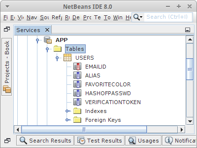POJOs
Aus Datenbanksicht ist die Login Anwendung trivial. Wir haben ein POJO für den Nutzer:
@Entity @Table(name = "Users") public class User { @Id private String emailId; @Column(nullable = false) private String alias; @Column(length = 256, nullable = false) private String hashOfPasswd; @Column(nullable = false) private String favoriteColor; @Column(nullable = true) private String verificationToken = "New user, not verified."; ... constructors, getters, setters, toString public boolean isVerifiedUser() { if (verificationToken == null) { return true; } return false; } }
Interessant ist die Tatsache, dass es bei vielen Datenbanken bereits eine Tabelle namens "User" gibt, deswegen geben wir unserer Tabelle den Namen "Users", damit es hier nicht zu komischen Fehlermeldungen kommt. Aus Bequemlichkeit fügen wir noch eine Methode isVerifiedUser() hinzu.
DAO
Etwas komplizierter wird allerdings die UserDao, hier passiert die ganze Arbeit. Deswegen besprechen die verschiedenen Teile separate. Wir beginnen mit dem Konstruktor. UserDao erbt von GenericDao, also alle CRUD Standardmethoden werden übernommen. Was wir allerdings noch benötigen sind Informationen zum Hashen des Passwortes, denn wir wollen das Passwort nicht im Klartext in der Datenbank speichern. Dazu benötigen wir das Salt, und die Anzahl der Iterationen wie häufig gehasht werden soll.
public class UserDao extends GenericDao<String, User> {
private byte[] salt;
private int iterations;
private int passwordHashedLength;
public UserDao() {
super();
// TODO: the following should be loaded from config file:
salt = Utility.hexStringToByteArray("3577b8a868cce281cc76cf859613d5ad");
iterations = 881;
passwordHashedLength = 256; // when changed need to adjust User.hashOfPasswd length
}
}
Betrachten wir als nächstes die initDatabase() Methode: hier wird ein Testnutzer angelegt. Es zeigt wie wir aus dem Klartext-Passwort "123456" ein "gehashtes" Passwort erzeugen.
public void initDatabase() {
String pwdHash = Utility.generatePasswordHash("123456", salt, iterations, passwordHashedLength);
merge(new User("ralph@lano.de", "ralphlano", pwdHash, "red", null));
}
Wenn sich ein Nutzer einloggen möchte, rufen wir die loginUser() Methode auf. Wir prüfen zuerst ob es einen Nutzer mit der gewünschten emailId gibt, dann überprüfen wir ob der Nutzer schon verifiziert wurde, um schliesslich zu prüfen ob auch das richtige Passwort eingegeben wurde. Falls alles passt, geben wir eine Instanz des User Objektes zurück, sonst gibts null.
public User loginUser(String emailId, String passwd) {
User usr = findById(emailId);
if (usr != null) {
if (usr.isVerifiedUser()) {
String pwdHash =
Utility.generatePasswordHash(passwd, salt, iterations, passwordHashedLength);
if (pwdHash.equals(usr.getHashOfPasswd())) {
return usr;
}
}
}
return null;
}
Wenn wir es mit einem neuen Nutzer zu tun haben, dann müssen wir erst mal verifizieren, dass es kein Roboter ist (wir wollen keine Roboter als Nutzer, ziemlich fies, ich weiss) und dass alle wichtigen Daten eingegenen wurden:
public String verifyRegistrationData(HttpServletRequest request) {
String error = "An unknown error occured.";
String emailId = request.getParameter("emailId");
String alias = request.getParameter("alias");
String passwd = request.getParameter("password");
String favoriteColor = request.getParameter("favoriteColor");
String sum = request.getParameter("sum");
String result = request.getParameter("result");
String acceptTerms = request.getParameter("acceptTerms");
// check if robot
if ((sum != null) && (result != null) && (sum.equals(result))) {
// check if terms accepted.
if ((acceptTerms != null) && (acceptTerms.equals("on"))) {
// check if user entered proper data
if ((emailId!=null)&&(passwd!=null)&&(alias!=null)&&(favoriteColor!=null)) {
if (Utility.isValidEmail(emailId)) {
if (Utility.isStrongPassword(passwd)) {
if ((alias.length()>2)&&(favoriteColor.length()>2)) {
// now check if a user with this emailId already exists:
if (findById(emailId) == null) {
// everything is fine!
error = null;
} else {
error = "A user with this email address already exists.";
}
} else {
error = "Your alias and/or favorite color must be at least 3 chars long.";
}
} else {
error = "Your password must be at least 6 chars long "+
"and contain a small letter, a capital letter, "+
"a digit and a special character.";
}
} else {
error = "Email is not a valid email address.";
}
} else {
error = "All fields are required.";
}
} else {
error = "You must accept the terms.";
}
} else {
error = "Wrong captcha.";
}
return error;
}
Danach können wir die createUser() Methode aufrufen, und übergeben ihr das komplette request Objekt. Das ist viel praktischer als sechs Parameter individuell zu übergeben. Wir holen uns die Information die wir brauchen, und legen einen neuen User an. Wir generieren anschliessend einen String, den wir als Email an den Nutzer schicken können damit dieser seine Email verifizieren kann. Solange er das nicht getan hat, ist sein Status nicht verifiziert, was wir daran erkennen, das sein Attribut verificationToken nicht auf null gesetzt ist.
public String createUser(HttpServletRequest request) {
String emailId = request.getParameter("emailId");
String alias = request.getParameter("alias");
String passwd = request.getParameter("password");
String favoriteColor = request.getParameter("favoriteColor");
String verificationToken = Utility.createVerificationToken();
String hashOfPasswd =
Utility.generatePasswordHash(passwd, salt, iterations, passwordHashedLength);
User usr = new User( emailId, alias, hashOfPasswd, favoriteColor, verificationToken);
save(usr);
String email = "Click on this link to verify your email identity: ";
email +=
"<a href='verifyEmail.jsp?emailId="+emailId+"&verificationToken="+verificationToken+"'>link</a>";
return email;
}
Allerdings ist in dem Code ein kleiner Denkfehler: was passiert denn wenn der Nutzer schon existiert?
So, der User existiert jetzt in der Datenbank, als nächstes erwarten wir, dass er auf den Verifizierungslink in seiner Email klickt. Also müssen wir ihn verifizieren:
public boolean verifyUser(String emailId,String verificationToken) {
if ((emailId!=null)&&(verificationToken!=null)) {
User usr = findById(emailId);
if (usr != null) {
if (verificationToken.equalsIgnoreCase(usr.getVerificationToken())) {
usr.setVerificationToken(null);
merge(usr);
return true;
}
}
}
return false;
}
Fehlt noch die Möglichkeit sein Passwort zu ändern. Natürlich müssen wir erst checken ob das alte Passwort richtig war, und dann muss das neue Passwort natürlich was taugen, sonst bleibts beim alten:
public String changePassword(HttpServletRequest request, User usr) {
String error = "An unknown error occured.";
String password = request.getParameter("password");
String newPassword1 = request.getParameter("newPassword1");
String newPassword2 = request.getParameter("newPassword2");
if ((password != null) && (newPassword1 != null) && (newPassword2 != null)) {
if ( newPassword1.equals(newPassword2)) {
if (usr != null) {
String hashOfPasswd =
Utility.generatePasswordHash(password, salt, iterations, passwordHashedLength);
if (hashOfPasswd.equals(usr.getHashOfPasswd())) {
if (Utility.isStrongPassword(newPassword1)) {
String hashOfNewPasswd1 =
Utility.generatePasswordHash(
newPassword1, salt, iterations, passwordHashedLength);
usr.setHashOfPasswd(hashOfNewPasswd1);
merge(usr);
// everything is fine!
error = null;
} else {
error = "Your password must be at least 6 chars long "+
"and contain a small letter, a capital letter, "+
"a digit and a special character.";
}
} else {
error = "You entered the wrong password.";
}
} else {
error = "You must login before changing your password.";
}
} else {
error = "Your new passwords do not match.";
}
} else {
error = "You must enter all fields.";
}
return error;
}
Zum Schluß soll es ja solche Dödels geben die ihr Passwort vergessen. Die sollten dann wenigstens ihre Lieblingsfarbe wissen. Falls sie die wissen, bekommen sie eine Email, ansonsten behandeln wir sie wie Roboter:
public String forgotPassword(String emailId, String favoriteColor) {
User usr = findById(emailId);
if (usr != null) {
if (favoriteColor.equalsIgnoreCase(usr.getFavoriteColor())) {
String verificationToken = Utility.createVerificationToken();
usr.setVerificationToken(verificationToken); // make sure usr cannot login
String passwd = Utility.createStrongPassword();
String hashOfPasswd = Utility.generatePasswordHash(
passwd, salt, iterations, passwordHashedLength);
usr.setHashOfPasswd(hashOfPasswd);
merge(usr);
String email = "Your new password is: " + passwd +"<br/>";
email += "Click on this link to verify your email identity: ";
email += "<a href='verifyEmail.jsp?emailId="+emailId+"&verificationToken="+
verificationToken+"'>link</a>";
return email;
}
}
return null;
}
Das war jetzt ziemlicher schwerer Tobak, aber mit dem Top-Down Ansatz aus dem ersten Semester haben wir das auch geschafft.
Fassen wir noch einmal zusammen was wir gelernt haben:
- Datenbank Tabellen sollten nie "User" heißen
- die Datenbank initialisieren wir in jspInit() (allerdings nur zum Testen, sollte man nicht auf einer Production Maschine machen)
- die Logik ist idealerweise an einer Stelle loginLogic.jsp zusammengefasst
- die DAO kann sehr viel Arbeit erledigen
- den Workflow von Registration, Verification über Change Password hinzu Forgot Password
- security issues, hashing, regular expressions, strong passwords, passwordHashed, salt
- dem Nutzer Feedback bei falschen Eingaben geben kann
- wie man die Sessions verwendet um geschützte Seite zu schützen
- wie ein Verification Link funktioniert
- wie man aus einem Bytearray einen String generiert
Wenn man jetzt noch eine kleine Herausforderung sucht, dann könnte man sich überlegen was noch fehlt damit man zwei verschiedene Arten von Nutzern haben könnte, also z.B. normale Nutzer und solche mit Administratorrechten.
.
 Chirpr
Chirpr
Unser Mini-Soziales-Netzwerk Chirpr haben wir auch schon gegen Ende des ersten Kapitels vorgestellt. Die UI Seiten haben wir schon angelegt, es fehlt nur noch ein wenig Logik. Ein Teil davon passiert in der chirprLogic,jsp Seite:
<%
// user login
if (request.getParameter("login") != null) {
String emailId = request.getParameter("emailId");
if ((emailId != null) && (emailId.length() > 3)) {
// try to create a user object
BirdDao brdDao = (BirdDao)application.getAttribute("Chirpr.BirdDao");
Bird brd = brdDao.getBird(emailId);
if (brd != null) {
session.setAttribute("Chirpr.Bird",brd);
response.sendRedirect("protected.jsp");
return;
}
}
request.setAttribute("error", "Your username must be at least 4 characters long.");
request.getRequestDispatcher("index.jsp").forward(request, response);
return;
}
// chirp
if (request.getParameter("chirp") != null) {
Bird brd = (Bird)session.getAttribute("Chirpr.Bird");
if ( brd != null) {
String text = request.getParameter("text");
if ((text != null) && (text.length() >= 5) && (text.length() <= 42)) {
Chirp crp = new Chirp(text);
ChirpDao crpDao = (ChirpDao) application.getAttribute("Chirpr.ChirpDao");
crpDao.save(crp);
brd.addChirp(crp);
BirdDao brdDao = (BirdDao)application.getAttribute("Chirpr.BirdDao");
brdDao.merge(brd);
TagDao tagDao = (TagDao)application.getAttribute("Chirpr.TagDao");
tagDao.parseChirpForTags(crp);
}
}
response.sendRedirect("protected.jsp");
return;
}
// just make sure we did not forget an if or something
response.sendRedirect("index.jsp");
%>
Der andere Teil passiert in den Daos.
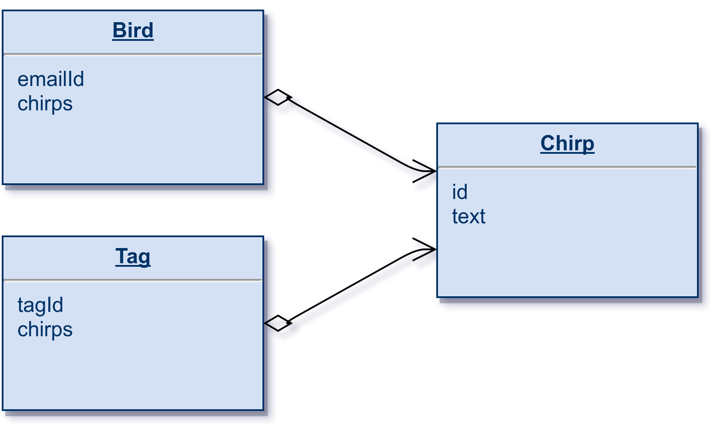POJOs
Bevor wir zu den Daos kommen, kümmern wir uns um die POJOs. Wir beginnen mit den Birds, also den Nutzern. Die Birds setzen Chirps ab, haben also keinen, einen oder mehrere, also eine OneToMany Beziehung. Ob man ein Set oder eine Liste als Container verwendet hängt davon ab ob einem die Reihenfolge der Chirps wichtig ist. Uns ist sie nicht wichtig.
public class Bird {
@Id
private String emailId;
@OneToMany
private Set<Chirp> chirps;
... constructors, getters, setters, toString
}
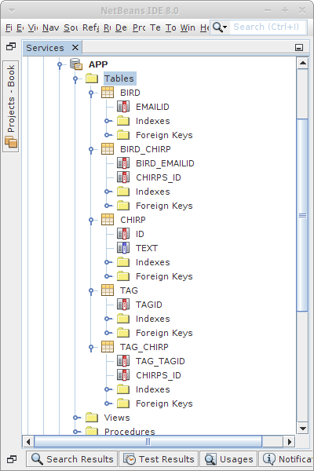Kommen wir zu den Chirps. Jeder Chirp kann Tags enthalten und jedes Tag kann in mehreren Chirps vorkommen, also eigentlich eine ManyToMany Beziehung. Wenn wir unsere Anforderungen aber genau durchlesen, gibt es niemals die Anforderung dass wir die Tags eines Chirps auflisten müssen. D.h. die Chirps müssen gar nichts über ihre Tags wissen. Das erlaubt es uns die viel komplexere ManyToMany Beziehung durch eine OneToMany Beziehung auf der Tag Seite zu ersetzen.
public class Chirp {
@Id
@GeneratedValue(strategy = GenerationType.IDENTITY)
private Long id;
@Column(length = 140, nullable = false)
private String text;
... constructors, getters, setters, toString
}
Und damit ergibt sich das Tag POJO:
public class Tag {
@Id
private String tagId;
@OneToMany
private Set<Chirp> chirps;
... constructors, getters, setters, toString
}
Das ist gar nicht so kompliziert, oder?
DAOs
Kommen wir zu den DAOs. Die BirdDao ist ganz einfach, wir haben nur eine Zusatzanforderung, wenn ein Bird noch nicht existiert, soll einfach ein neuer angelegt werden:
public class BirdDao extends GenericDao<String, Bird> {
public BirdDao() {
super();
}
public Bird getBird(String emailId) {
Bird brd = findById(emailId);
if (brd == null) {
brd = new Bird(emailId);
save(brd);
}
return brd;
}
}
Die ChirpDao übernimmt alle Eigenschaften der GenericDao und initialisiert die Datenbank mit zwei Birds und drei Chiprs:
public class ChirpDao extends GenericDao<Long, Chirp> {
public ChirpDao() {
super();
}
public void initDatabase(BirdDao brdDao,TagDao tagDao) {
Bird bd1 = new Bird("ralph");
brdDao.save(bd1);
Bird bd2 = new Bird("vince");
brdDao.save(bd2);
Chirp cp1 = new Chirp("Welcome to #Chirpr");
save(cp1);
bd1.addChirp(cp1);
tagDao.parseChirpForTags(cp1);
Chirp cp2 = new Chirp("#Java is the greatest!");
save(cp2);
bd2.addChirp(cp2);
tagDao.parseChirpForTags(cp2);
Chirp cp3 = new Chirp("#Chirpr is written in #Java");
save(cp3);
bd2.addChirp(cp3);
tagDao.parseChirpForTags(cp3);
brdDao.merge(bd1);
brdDao.merge(bd2);
}
}
Schliesslich kommen wir zur TagDao. Hier übernehmen wir wieder alle Eigenschaften der GenericDao. Dann müssen wir aber noch zwei Dinge tun: erst einmal müssen wir in der Methode parseChirpForTags() einen Chirp nach Hash-Tags durchsuchen. Das machen wir mit einem Regulären Ausdruck (got to love them by now). Und wir müssen die Tags mit all ihren Chiprs speichern, das machen wir in addChirpToTag().
public class TagDao extends GenericDao<String, Tag> {
public TagDao() {
super();
}
public void parseChirpForTags(Chirp crp) {
Pattern pat = Pattern.compile("(^|\\s)\\#(\\w+)");
Matcher mat = pat.matcher(crp.getText());
while (mat.find()) {
String tag = mat.group(2);
//System.out.println("."+tag+".");
addChirpToTag(tag.toLowerCase(),crp);
}
}
private void addChirpToTag(String tag, Chirp crp) {
Tag tg = findById(tag);
if ( tg == null ) {
tg = new Tag(tag);
save(tg);
}
tg.addChirp(crp);
merge(tg);
}
}
Und das wars dann eigentlich schon.
Challenge
Das Gefühl, dass alles immer einfach ist, kann manchmal täuschen. Nehmen wir an, wir hätten eine Anforderung die besagt, dass neben jedem Chirp der Bird (also Nutzer) stehen soll, der diesen Chirp geschrieben hat, z.B.
#Java is the greatest! ralph
Mit unserem momentanen Datenmodell ist diese Anforderung nicht zu erfüllen! Was müssten wir denn ändern damit das möglich wäre? Was wären denn die Konsequenzen? Ist es das wirklich wert? Das ist wieder unsere berühmte 80-20 Regel, auch Pareto Prinzip genannt.
.
 Quizs
Quizs
Quizs ist eine Webanwendung mit der man anhand von Multiplechoice Fragen sein Wissen überprüfen kann. Ausserdem kann man auch Prüfungen erstellen. Auch diese Anwendung ist bereits aus dem ersten Semester bekannt, damals haben wir sie als Swing Anwendung programmiert aber ohne Datenbank.
Beginnen wir wieder mit unseren Anforderungen. Aus der Sicht eines Studierenden können wir
- uns identifizieren: login.jsp
- an einer Prüfung teilnehmen: exam.jsp
- die Resultate einsehen: results.jsp
- uns ausloggen: logout.jsp
Falls ein Studierender noch nicht exisitiert, wird einfach ein neuer angelegt.
Aus Sicht eines Lehrers können wir
- uns identifizieren: login.jsp
- neue Fragen erstellen: question.jsp
- neue Prüfungen erstellen: exam.jsp
- alle Studierende auflisten: results.jsp
- uns ausloggen: logout.jsp
Lehrer gibt es nur einen: den 'teacher'. Wenn sich also jemand als mit der ID 'teacher' einlogged, hat er die teacher Privilegien. Es gibt also zwei verschiedene Nutzer-Typen in dieser Webanwendung.
JSPs
Die UI Seiten haben wir ja schon angelegt. Ein wenig Logik passiert in der quizsLogic,jsp Seite:
<%
// user login
if (request.getParameter("login") != null) {
String emailId = request.getParameter("emailId");
if ((emailId != null) && (emailId.length() > 3)) {
if ( emailId.equals("teacher")) {
session.setAttribute("Quizs.Teacher","Teacher");
response.sendRedirect("teacher/");
return;
} else {
// try to create a user object
StudentDao stdntDao = (StudentDao)application.getAttribute("Quizs.StudentDao");
Student stdnt = stdntDao.getStudent(emailId);
if (stdnt != null) {
session.setAttribute("Quizs.Student",stdnt);
response.sendRedirect("student/");
return;
}
}
}
request.setAttribute("error", "Your username must be at least 4 characters long.");
request.getRequestDispatcher("index.jsp").forward(request, response);
return;
}
// just make sure we did not forget an if or something
response.sendRedirect("index.jsp");
%>
Der Rest der Logik passiert in den Daos.
POJOs
In diesem Beispiel gibt es einige POJOs. Ein Student kann an Examen teilnehmen. Ein Examen besteht aus mehreren Fragen. Und jedes Examen hat Resultate.
Wir beginnen mit dem Question POJO, weil es das einfachste ist. Eine Frage hat mehrere Antworten, und Antworten sind einfache Strings. Bei den Antworten kommt es aber ausnahmsweise mal auf die Reihenfolge an, deswegen verwenden wir heute eine Liste:
public class Question {
@Id
@GeneratedValue(strategy = GenerationType.IDENTITY)
private Long id;
@Column(nullable = false)
private String question;
@ElementCollection
@Column(nullable = false)
private List<String> answers;
@Column(nullable = false)
private Integer correctAnswer;
... constructors, getters, setters, toString
}
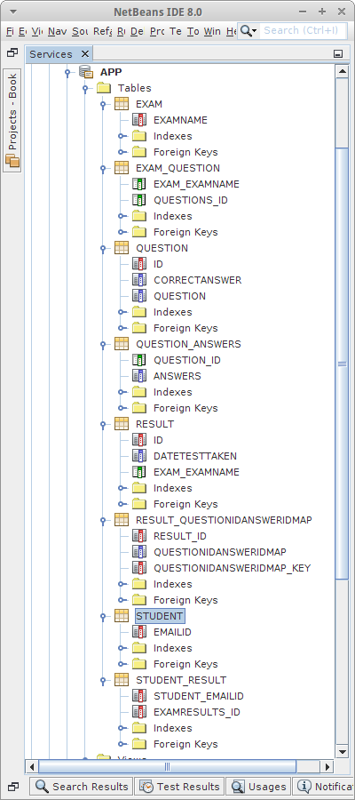Ein Exam besteht aus mehreren Fragen, und da eine Frage durchaus in verschiedenen Exams sein darf, handelt es sich um eine ManyToMany Beziehung. Auch hier wollen wir, dass die Reihenfolge festgelegt ist, deswegen eine Liste als Datentyp:
public class Exam {
@Id
private String examName;
@ManyToMany
private List<Question> questions;
... constructors, getters, setters, toString
}
Für die Resultate eines Exams verwenden wir das Result POJO. Resultate gehören immer zu einem Exam, deswegen eine OneToOne Beziehung zwischen Result und Exam. Muss diese unique sein? Die Antwort ist nein, da ja zwei Studierende am gleichen Exam teilnehmen können, aber durchaus zwei unterschiedliche Resultate erziehlen können. Kommen wir zu den Antworten: das sind die Antworten die der Studierende abgegeben hat. In diesem Fall ist unsere Collection eine Map, in der wir die Id der Frage der Key ist und die Antwort die der Studierende gegeben hat der Value.
public class Result {
@Id
@GeneratedValue(strategy = GenerationType.IDENTITY)
private Long id;
@OneToOne
private Exam exam;
@ElementCollection
@Column(nullable = true)
private Map<Long,Integer> questionIdAnswerIdMap;
@Column(nullable = false)
private Date dateTestTaken;
... constructors, getters, setters, toString
}
Zum Schluß fehlt noch das Student POJO: ein Studierender muss über seine Resultate Bescheid wissen. Da ein Studierender an mehreren Tests teilnehmen kann ist es entweder eine OneToMany oder eine ManyToMany Beziehung. Fragt sich, ob ein bestimmtes Resultat eines bestimmten Tests zu mehr als einem Studierenden gehören kann. Da wir keine Gruppenarbeit zulassen wollen, ist die Antwort nein, und deswegen handelt es sich um eine OneToMany Beziehung.
public class Student {
@Id
private String emailId;
@OneToMany
private Set<Result> examResults;
... constructors, getters, setters, toString
}
Bei so vielen POJOs kann man schon den Überblick verlieren, da hilft ein Klassendiagramm die Übersicht zu bewahren.
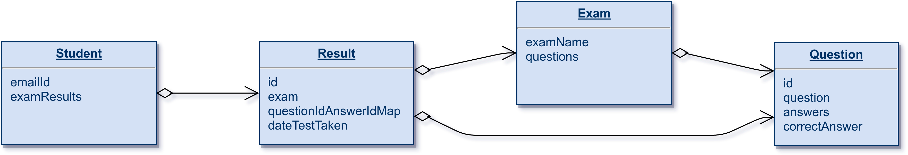
Interessanterweise ist das um einiges einfacher als das korrespondierende Entity Relationship Diagramm (ERD):
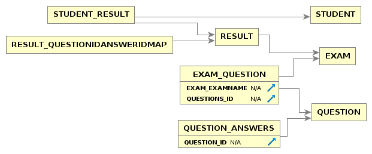
Aber natürlich ist das ERD genauer, es enthält mehr Information.
DAOs
Kommen wir zu den Daos. Die QuestionDao ist trivial:
public class QuestionDao extends GenericDao<Long, Question> {
public QuestionDao() {
super();
}
}
ebenso die ResultDao:
public class ResultDao extends GenericDao<Long, Result> {
public ResultDao() {
super();
}
}
Die ExamDao ist nur etwas komplizierter, aber nur weil wir die Datenbank mit wenigstens einem Exam initialisieren wollen:
public class ExamDao extends GenericDao<String, Exam> {
public ExamDao() {
super();
}
public void initDatabase(QuestionDao qstnDao) {
List<String> anss1 = new ArrayList<String>();
anss1.add("1");
anss1.add("2");
anss1.add("4");
Question q1 = new Question("What is 1 + 1?", anss1, 2);
qstnDao.save(q1);
List<String> anss2 = new ArrayList<String>();
anss2.add("red");
anss2.add("black");
anss2.add("blue");
Question q2 = new Question("Which color is the sky?", anss2, 3);
qstnDao.save(q2);
Exam ex = new Exam("Simple Exam");
ex.addQuestion(q1);
ex.addQuestion(q2);
save(ex);
}
}
Die StudentDao ist auch nicht besonders kompliziert. Auch hier wollen wir zwei Studenten vorinstallieren und wir überschreiben die getStudent() Methode, denn wir möchten, dass Studenten einfach neu angelegt werden, falls sie noch nicht exisiterien sollten.
public class StudentDao extends GenericDao<String, Student> {
public StudentDao() {
super();
}
public Student getStudent(String emailId) {
Student stdnt = findById(emailId);
if (stdnt == null) {
stdnt = new Student(emailId);
save(stdnt);
}
return stdnt;
}
public void initDatabase() {
Student st1 = new Student("ralph");
save(st1);
Student st2 = new Student("vince");
save(st2);
}
}
Nach diesem Projekt sollte uns eines klar geworden sein: dadurch dass wir unsere Webanwendungen in kleine Teilprojekte zerlegen (Top-Down lässt grüßen) und dass wir die UI vom Datenmodell und Businesslogik trennen (View-Model-Controller), lassen sich selbst ursprünglich komplex anmutende Anwendung relativ problemlos implementieren.
.
Research
Manche Themen habe wir hier nur sehr oberflächlich behandelt. Man könnte sich aber das eine oder andere noch etwas detailierter ansehen.
.
ORM Engines
Hibernate ist nicht die einzige ORM Engine. Um sicher zu gehen, dass wir mit Hibernate auch eine gute Wahl getroffen haben, sollten wir erst einmal die alternativen ORM Engines für Java finden, und dann die wichtigsten vergleichen. Ausserdem sollten wir mal nach ORM Engines für andere Programmiersprachen wie ASP, PHP oder Python suchen. Falls eine Sprache keine ORM Engines hat, sollte man die Finger davon lassen.
.
NoSql
Unter dem Kürzel "NoSql" sind in den letzten Jahren sehr viele neue Datenbankkonzepte eingeführt worden. Bevor man sich allerdings blindlings auf das "Neue" stürzt, sollte man erst einmal wissen worauf man sich da einlässt und was eigentlich dahinter steckt. Eine Frage die uns natürlich interessiert, kann man ORM auch mit einer NoSql Datenbank verwenden, und macht das überhaupt Sinn?
.
Fragen
-
Was ist ein POJO? Wofür steht “POJO”? Wofür sind POJOs nützlich?
-
Schreiben Sie eine Klasse Book und fügen Sie Hibernate Annotationen hinzu. Die Klasse Book sollte die folgenden Eigenschaften haben: title, author und price. Achten Sie darauf dass Sie auch die Konstruktoren mit angeben. Bei den Gettern und Settern können Sie davon ausgehen, dass diese autogeneriert wurden. Hinweis, die folgenden Annotationen könnten hilfreich sein:
@Column(length = 32000, nullable = false)
@Entity
@Gene
-
Vergleichen Sie die normale Art und Weise mit Datenbanken zu arbeiten (also SQL) mit der objekt-orientierten Art und Weise (also ORM). Nennen Sie je zwei Vorteile.
-
Was ist beim Speichern von Passwörtern in Datenbanken zu beachten, oder wie würden Sie Passwörter in einer Datenbank speichern?
-
Zeigen Sie anhand eines konkreten Beispiels (z.B. Usern und ihren Email Addressen) den Unterschied zwischen One-to-One, Many-to-One und Many-to-Many Beziehungen. Geben Sie für jede konkrete Beispiele wie die Tabellen in der Datenbank aussehen. Beschreiben Sie auch genau welche evtl Constraints auf den jeweiligen Spalten (Columns) liegen müssen.
-
Nennen Sie vier Gründe, warum man keine binären Dateien in der Datenbank speichern sollte. Nennen Sie einen warum es evtl manchmal doch Sinn macht.
-
Angenommen eine Seite fragt Sie nach Benutzernamen und Passwort. Sie haben aber sowohl Ihren Benutzernamen als auch Ihr Passwort vergessen. Was müssten Sie tun um sich mittels SQL Injection trotzdem einloggen zu können? Ist dieses Vorgehen legal?
-
Erklären Sie bitte wie SQL Injektion funktioniert (geben Sie evtl ein Beispiel) und nennen Sie drei Möglichkeiten wie man SQL Injektion verhindern kann.
-
In diesem Kapitel habe wir viel mit Hibernate gearbeitet. Dabei haben wir die folgenden Dateien generiert oder verwendet. Erklären Sie bitte was diese enthalten, und wofür sie benötigt werden, evtl mit Beispiel:
hibernate.cfg.xml:
HibernateUtil.java:
User.java:
UserDao.java
.
Referenzen
Alles was mit Hibernate zu tun hat findet man in Referenz [1]. Einen kleinen Überblick was sich mit D3JS anstellen lässt gibt [2].
[1] HIBERNATE - Relational Persistence for Idiomatic Java, Hibernate Reference Documentation, https://docs.jboss.org/hibernate/orm/3.6/reference/en-US/html/index.html
[2] D3.js - Data-Driven Documents, https://d3js.org
[3] Mike Bostock’s Block, Line Chart, https://bl.ocks.org/mbostock/3883245
.